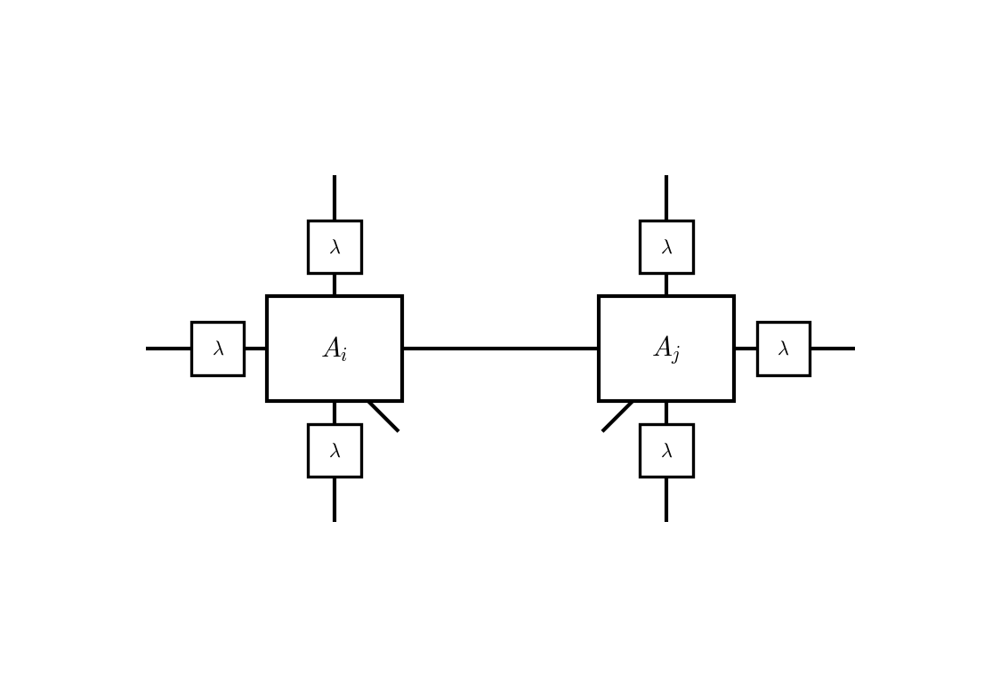
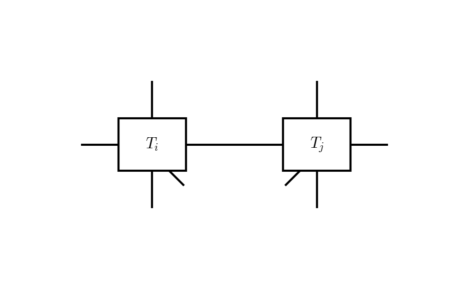

Simple Update
The simple update (SU) provides a computationally efficient alternative to the full update for performing imaginary-time evolution on the iPEPS [Jiang2008]. It replaces the full CTMRG environment with a mean-field approximation encoded in diagonal lambda tensors living on the bonds of the tensor network.
Gamma–Lambda Decomposition
In the simple update, each site tensor is decomposed into a gamma tensor \(\Gamma_i\) (the on-site component) and diagonal lambda tensors \(\lambda^{(b)}\) on each bond \(b\) adjacent to site \(i\). This decomposition is equivalent to the Vidal canonical form [Vidal2007]:
The lambda tensors approximate the Schmidt-like weights of the bonds. The full network of site tensors and lambda tensors looks like:

Bond Update Procedure
Each bond update follows these steps:
1. Absorb surrounding lambdas
Starting from the two sites \(A_i, A_j\) connected by bond \((i,j)\), absorb (multiply in) the square roots of the lambda tensors on all surrounding bonds (those not being updated). The lambda on the connecting bond \((i,j)\) itself is not absorbed:
{kind=link}
After absorption, the result is a pair of tensors with bare external legs:
{kind=link}
2. QR decomposition
Each absorbed tensor is factorised using a QR decomposition to extract a smaller reduced tensor:
3. Gate application
The two-body gate \(g_{ij} = e^{-\delta\tau\, h_{ij}}\) is applied to the reduced tensors through their physical indices:
{kind=link}
4. SVD and truncation
The resulting tensor \(\Theta\) is decomposed via SVD:

The singular-value matrix \(\Sigma\) is truncated to the \(D\) largest values and normalised. The updated lambda tensor on the bond is:
5. Reassemble site tensors
The truncated \(U\) and \(V^\dagger\) are contracted back with the isometric parts:
6. Strip surrounding lambdas
Finally, the surrounding lambda tensors that were absorbed in step 1 are stripped (divided out) from the updated site tensors, restoring the Gamma–Lambda decomposition.
Measurements
After the simple update evolution converges, measurements of expectation values require a converged CTMRG environment. The full site tensors \(A_i\) (with lambdas absorbed) are used for this purpose. The simple update only accelerates the imaginary-time evolution; the measurement step is identical to that used in the full update.
References
Jiang, Z. Y. Weng, and T. Xiang, Accurate determination of tensor network state of quantum lattice models in two dimensions, Phys. Rev. Lett. 101, 090603 (2008).
Vidal, Classical simulation of infinite-size quantum lattice systems in one spatial dimension, Phys. Rev. Lett. 98, 070201 (2007).